Uniformity test on the Sphere
We generated observations from the uniform distribution on , with , and .
## Registered S3 methods overwritten by 'ggpp':
## method from
## heightDetails.titleGrob ggplot2
## widthDetails.titleGrob ggplot2The pk.test is used for testing uniformity of the
generated sample.
##
## Poisson Kernel-based quadratic distance test of
## Uniformity on the Sphere
## Selected consentration parameter rho: 0.7
##
## U-statistic:
##
## H0 is rejected: FALSE
## Statistic Un: -0.9756673
## Critical value: 1.725683
##
## V-statistic:
##
## H0 is rejected: FALSE
## Statistic Vn: 14.89598
## Critical value: 23.22949The summary method for the pk.test output
object provides the results of the performed test, and generates a
figure showing the qq-plots against the uniform distribution of each
variable with a table of standard descriptive statistics.
summary_unif <- summary(res_unif)## Warning in geom_table_npc(data = data.frame(Stat = rownames(stats_step), : All aesthetics have length 1, but the data has 6 rows.
## ℹ Please consider using `annotate()` or provide this layer with data containing
## a single row.
## All aesthetics have length 1, but the data has 6 rows.
## ℹ Please consider using `annotate()` or provide this layer with data containing
## a single row.## Warning: Use of `qq_df$x` is discouraged.
## ℹ Use `x` instead.## Warning: Use of `qq_df$sample_quantiles` is discouraged.
## ℹ Use `sample_quantiles` instead.## Warning in geom_table_npc(data = data.frame(Stat = rownames(stats_step), : All aesthetics have length 1, but the data has 6 rows.
## ℹ Please consider using `annotate()` or provide this layer with data containing
## a single row.##
## Poisson Kernel-based quadratic distance test of
## Uniformity on the Sphere
## Test_Statistics Critical_Value Reject_H0
## 1 -0.9756673 1.725683 FALSE
## 2 14.8959834 23.229487 FALSE
The figure automatically generated by the summary
function on the result of the test for uniformity displays the qq-plots
between the given samples and the uniform distribution with a table of
the standard descriptive statistics for each variable.